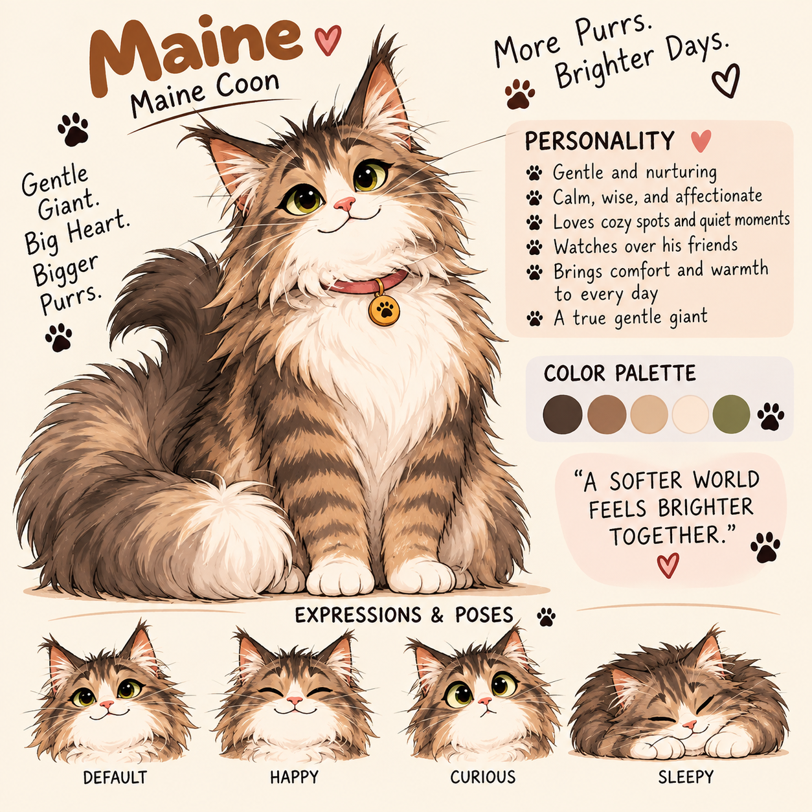
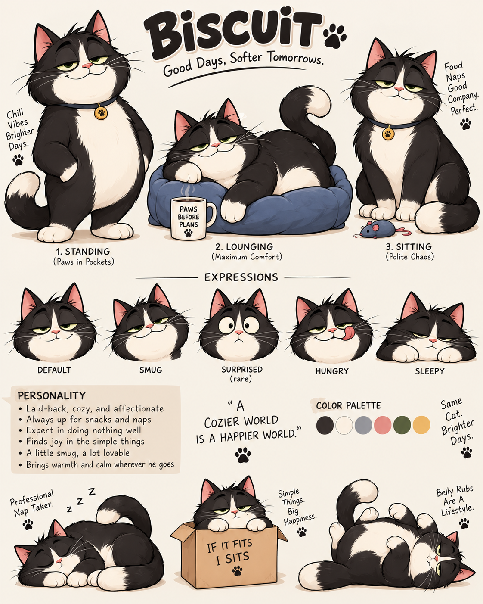
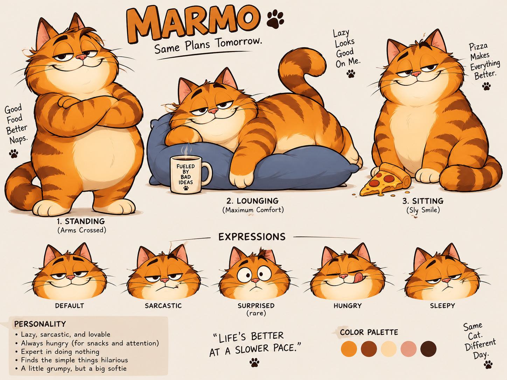
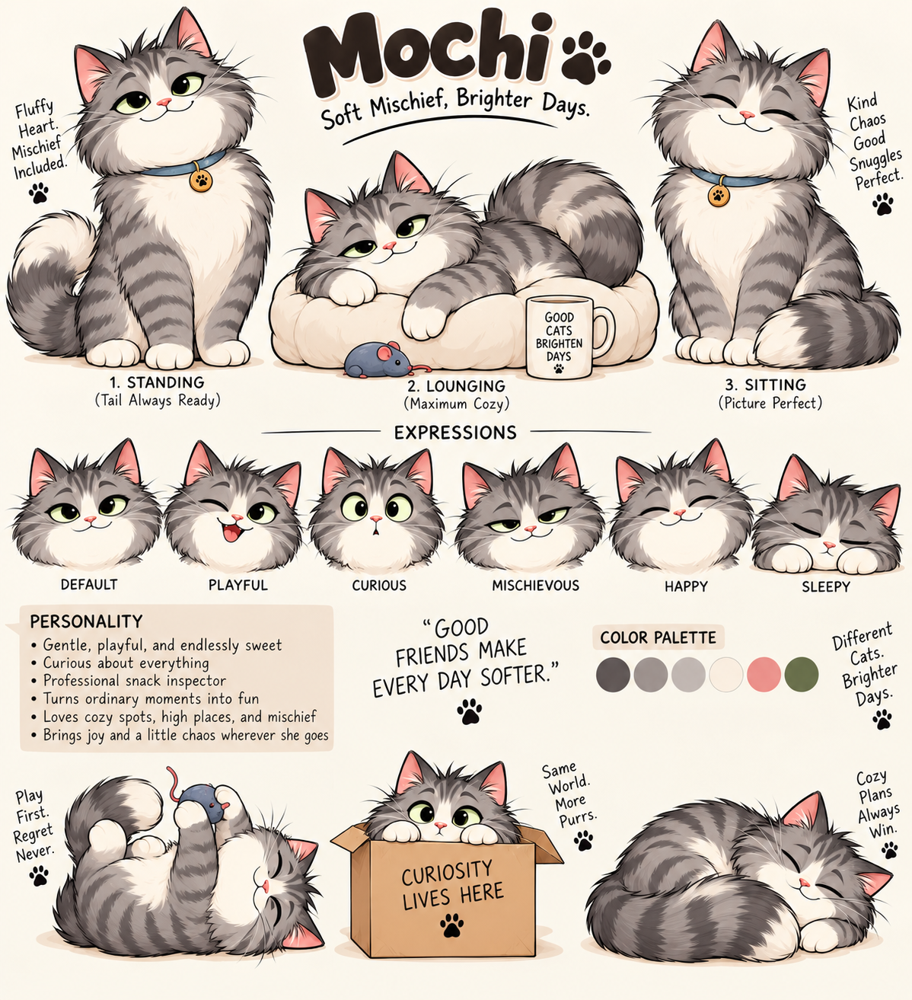

A growing world of AI cats and original NFT cats. Follow the journey as we build their personalities, their home, and their collection one cat at a time.
See What We're BuildingFour AI cats started this world. Each has its own personality, memories, wants, habits, and adventures.

A playful and curious Maine Coon.

A playful tuxedo cat with plenty of energy.

A lovable orange tabby who appreciates food and naps.

A fluffy, gentle and mischievous gray-and-white cat.
The collection isn't appearing overnight. Visitors can follow along as ManyCatWorld grows.
Maine, Biscuit, Marmo and Mochi already live together inside our developing AI Cat House.
A future version of ManyCatWorld will let visitors watch the cats live, play, think, sleep and interact.
Original cats from around the world are being designed, named and turned into unique ManyCatWorld characters.
Soon this area will become the NFT gallery, with finished cats, names, descriptions and a link to OpenSea.